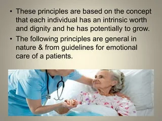
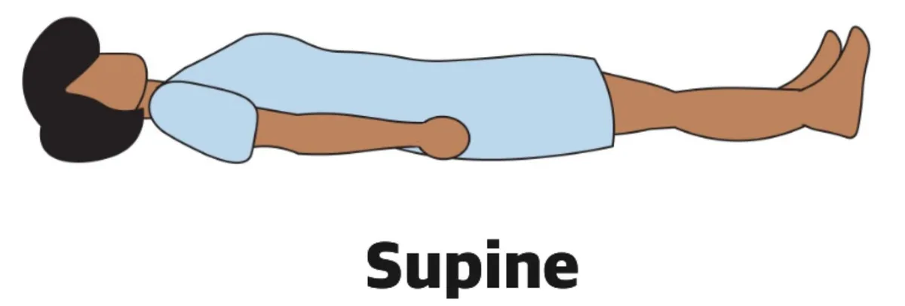
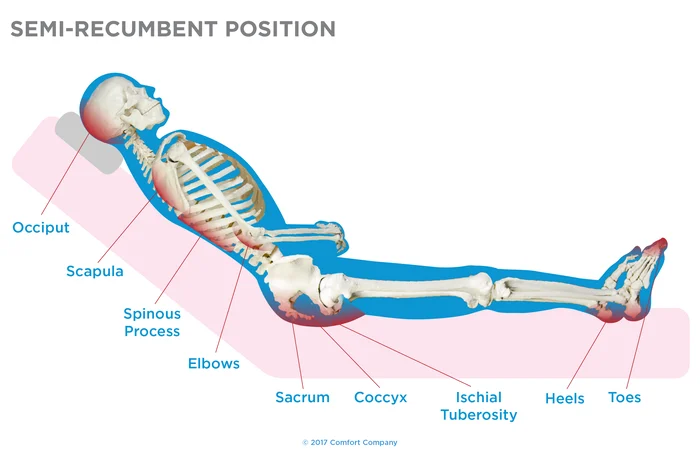
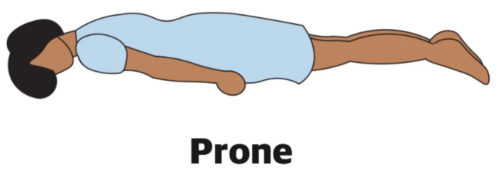
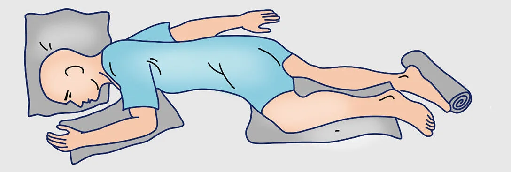
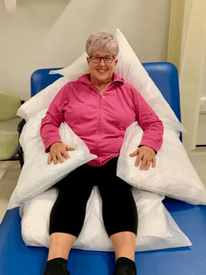
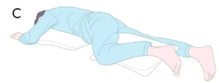
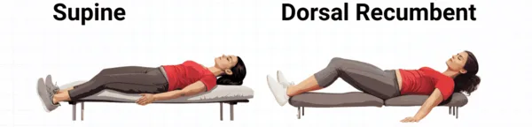

Expanded Nursing Uganda Explanation
General principles in patient care should be reviewed through safe maternal and newborn assessment, early recognition of danger signs, respectful communication and timely referral. Connect the definition to vital signs, bleeding, fetal or newborn wellbeing, patient education and local protocol requirements.
Contents — 26 sections (tap to expand)
01 Demonstrate appropriate methods of lifting/positioning a patient (PEX 1.3.8)
Safe and effective patient lifting and positioning are crucial skills for nurses to prevent injury to both the patient and themselves, promote patient comfort, and facilitate various procedures and recovery.
This PEX focuses on demonstrating:
- Using proper body mechanics when lifting and moving patients.
- Selecting the appropriate method for lifting or moving based on the patient's condition and ability.
- Positioning patients correctly in various therapeutic positions (as detailed in the 'Positions Used in Nursing' section).
- Using assistive devices (if available) for lifting and transferring.
- Communicating with the patient during the lifting/positioning process.
- Ensuring patient safety and comfort throughout the procedure.
02 POSITIONS USED IN NURSING
Positioning is placing the person in a proper body alignment for the purpose of preventive, promotive, curative and rehabilitative aspect of health.
Purpose of position:
- To provide comfort to the patient.
- To relieve pressure on various parts of the body.
- To improve circulation
- To prevent formation of deformity
- To carry out investigations (medical and surgical)
- To prevent pressure sores
- To provide proper body alignment
- To conduct delivery
- To carry out nursing interventions
Types of positions commonly used in nursing:
- Recumbent/supine position
- Dorsal recumbent position
- Semi-recumbent position
- Lithotomy position
- Prone position
- Lateral or sim’s position
- Fowler’s/sitting up position
- Knee-chest or genupectoral position
- Trendelenburg’s position
Types of patients who need special care:
- Unconscious patients
- Infants and children
- Hemiplegics and paraplegic patients
- Immediate post-operative patients
- Orthopedic patients
- Cardiac patient etc
03 Recumbent/supine position
One or two pillows may be used for this position. The patient lies on the pack with his head and shoulders are slightly elevated on the pillow(s). His legs should be slightly flexed and a small pillow under the knees or the legs are left straight.
One pillow: This is used to provide full relaxation for acutely ill patients and for patients on complete bed rest. It is also used when examining the trunk.
Two pillows: The patient lays in bed with 2 pillows under his head. This is commonly used both medical and surgical nursing.
Indications:
- It is a common position used by most patients
- used for examination of the trunk (chest and abdomen)
Contraindications:
- Elderly patients
- Patients with operation on abdomen, breast and thorax
- Prone to hypostatic pneumonia
- Patient’s with long standing illness and neurological conditions
04 Semi-recumbent position
The patient is half sitting up, supported by three or more pillows. This is a comfortable position for patients who are recovering from an illness and who wish to be able to read in bed.
Indications:
- Recovering patients
- To obtain good drainage in the pelvis
- To prevent straining of abdominal muscles
05 Prone position
The patient lies on the front of the body and has his head turned to one side. A pillow is provided on which to rest the side of his face, a small soft pillow is placed under the abdomen and pelvis, the knees are flexed and the lower leg supported on a pillow, under the ankles. It is useful when there is danger of bed sores forming on the back or for change of position when the patient is in a plaster bed with a fractured supine.
Indications:
- Post-operative patients
- Prevention of bed sores
- Relieve abdominal distension
- Patients having injuries and burns of the back
Contraindications:
- Not tolerated by the elderly
- Patients with cardiovascular conditions
- Patients with respiratory problems
06 Lateral/sim’s position
The patient lies on the right or left side of his body with legs flexed at the highs. The left lateral is the most commonly used and the patient lies on the left side. A pillow is kept in front of the abdomen, the back and one under the upper leg.
Indications:
- Used for giving of an enema
- Examination of the rectum
- Inserting suppositories
- Taking of rectal temperature
- It is used as change of position from the semi-recumbent position
- Colonic irrigation
- Giving back care
07 Sitting up position
The patient is sitting nearly upright at least at an angle of 45° attained by means of a special bed or use of a back rest and pillows. Asorbo foam cushion/air ring to relieve weight at the sacrum and ileum is usually place under the buttocks and it is necessary to use some means to prevent the patient from slipping down the bed. This may be done by using a foot rest or elevating the bed on bed blocks. The position is used in cases where there is dyspnoea e.g. heart disease, pneumonia, bronchitis.
Indications:
- Dyspnoea
- Improve thrombosis
- Post-operatively to assist drainage form abdominal or pelvic cavity
- To relax the muscles of the abdomen and thighs
- To relieve tension on abdominal sutures
- To promote comfort
- To relieve edema of the chest and abdomen
08 Semi-prone position
The position is similar to lateral except with the upper knee flexed and the upper part of the trunk turned so that the patient lies almost prone, one arm behind the back, the other arm flexed at the shoulder and elbow lying in front of the patient’s face. The head is turned on one side, no pillows are used. This position ensures the greatest safety for the unconscious patients because it prevents danger of the tongue falling and blocking air passage, and also allows any secretions run out of the mouth (drain).
Indications:
- Unconscious patients,
- Those returning from operating theatre,
- Rectal examination
- Relaxation in antenatal exercises
NB. The patients who have had an abdominal operation are placed in recumbent position but all other cases are put back into bed on the semi-prone position unless otherwise ordered.
Contraindications:
- Patients with deformities of the hip or knee may be unable to assume this position.
09 Dorsal recumbent position
Patient lies on the back with the knees fully flexed, thighs flexed and externally rotated feet flat on the bed. The patient is placed on the back in bed with two or more pillows under the head and one pillow under the knees or the bed is elevated at the top to maintain the position.
Indications:
- Catheterization
- Vaginal douche
- Vulva, vaginal and rectal examination
- Vaginal operations
- Insertion of tampons
- Patients with abdominal or pelvic operations unless erect/sitting position is indicated.
10 Lithotomy position
The patient lies on her back, the legs are separated and supported on the stirrups, thighs are flexed on the abdomen and the patient’s buttocks are kept at the edge of bed or table. One pillow is placed under the patient’s head.
Indications:
- Gynaecology examinations, treatments and operations on the genitourinary system
- For delivery
- Rectal examination and operations
Contraindications:
- Patients with arthritis or joint deformity
11 Knee-chest position
The patient rests on the knees and the chest, the head is turned to one side with one cheek on a pillow and another pillow places under the chest. The weight is on the chest and knees.
Indications:
- Used for sigmoidoscopy
- Vaginal and rectal examination
- First aid treatment in cord prolapsed or retroverted uterus.
- As exercise for postpartum and gynaecology
Contraindications:
- Patients with cardiovascular and respiratory problems
12 Trendelenburg’s position
The patient lies on his back, the head is lower than the trunk, the foot of the bed is elevated at 45° angle, the body is on an inclined angle and the legs hang downward over the end of the table.
Indications:
- Used in emergency situations like shock and hemorrhage (arrest bleeding from lower limbs)
- Used in vaginal surgeries
- Used to displace intestines from the pelvic cavity the upper abdomen
- Operations on the pelvic organs
13 Jack knife or Kroaske/Bozeman position
The patient is placed on a prone position with the hips directly over the band of the examining table. Tip the table with the head lower than the hips. Lower the foot part of the table so that the patient’s feet are below the level of his head. Place the pillow under the pelvis and abdomen to relieve the strain.
Indications:
- Operation on the rectum and coccyx
- Drainage
14 Walchers position
The patient is place flat on his back with the sacrum resting on the edge of the table. Lower the legs slowly towards the floor. Elevate the buttocks slightly if the table permits.
Indications:
- To increase the diagonal conjugate of the pelvis in high forceps delivery and in breech presentation
- To relax the perineum
15 Standing/erect position
The patient stands with the knees separated about ten inches with one foot on a low stool. Instruct her to place one hand on the back of the chair for support and the other hand on her hip.
Indications:
- Vaginal examination for determining the degree of uterus prolapsed
- Examination of hernia
16 LIFTING AND TURNING OF PATIENTS
A good nurse always knows how to lift and turn her patient gently. Great strength is not necessary to do this, it will need much practice.
17 To Lift a Patient Who Is in Sitting up Position in Bed
Procedure I: Orthodox lift
- Two nurses are necessary
- Move the patient forward from the pillows, each nurse placing a hand under the patient’s axilla.
- Ask the patient to fold the arms across the chest and bend the head forward (chin on chest) and bend the knees a little.
- Place the arm nearest the head of the head of the bed behind the buttocks at the patient’s back, grasping each other’s wrist firmly.
- Slip the other hand under the patient’s high up at the junction of the thighs and buttocks, grasping each other’s wrist firmly
- Each nurse should grip with one hand and be gripped on the other hand by the second nurse.
- They then lift the patient down the bed and off the draw sheet.
Procedure II: Australian/shoulder lift
- Both nurses face the head of the bed.
- Bend down and place shoulder nearest to the patient under the axilla to act as a crutch.
- Place the hand of the same arm under the thighs as in method I/procedure I.
- The free hand is placed flat on the bed behind the patient’s back and is used to take the weight when doing the lifting.
- Lift the patient down the bed and off the draw sheet.
18 To Turn a Patient onto the Side
- See that the patient’s knees are flexed, and put arms and legs in position for turning.
- Place one hand behind the shoulder furthest away and the other over the hips.
- Then turn the patient onto the side towards you.
19 To Lift a Patient onto the Bed from the Stretcher
- Three nurses are necessary.
- Put the head of the stretcher to the foot of the bed.
- Three nurses stand on the side nearest the bed, one lifts the head and shoulders, one the hips and the third at the legs.
- All lift the patient together then move to the right and place the patient very carefully on the bed.
- Make the patient comfortable in the bed.
20 To Lift a Patient onto the Bed from the Theatre Trolley
- Wheel the trolley up beside the bed.
- Then lift the patient onto the canvas stretcher and place him on the prepared bed.
- Remove the poles and put them back on the trolley.
- Remember the patient returning from theatre is usually unconscious; handle him very gently and carefully.
- Place the arms and legs in position for turning and turn patient to the left side and roll the canvas and mackintosh up to the back.
- Roll the patient back to the middle of the bed and then to the right side as above and take out the canvas and mackintosh, put on the theatre trolley.
- Put the patient into the position which is used for the condition e.g. semi-prone or lateral.
NB. The patient should lie facing the locker side of the bed because the post-anesthetic tray should be ready on it and the nurse will remain by the bedside (on this side.)
21 To help a patient Out Of Bed Onto A chair
Requirements:
- Patient’s gown
- Slippers/sandals
- Pillow from the bed
- Arm chair
- Blanket to put over the knees may be required
- A bell
Procedure:
- Help the patient into the gown and slippers.
- Bring the chair to the side of the bed.
- Place the patient’ legs over-side of the bed and help him to stand.
- Support the patient while he turns to sit into the chair.
- Place a pillow comfortably behind the back and fold a blanket over the knees if necessary.
- Give the patient some activity to do e.g. a book or knitting material and if he is alone a bell to ring incase he feels faint.
22 Perform tepid sponging (PEX 1.3.9)
TEPID SPONGING Is the process of sponging with tepid water to cool the skin/reduce fever by evaporation and the temperature of the water used is 80-90°F (22-28°C)
Purpose:
- To reduce the high temperature in a febrile state to normal
- To stimulate circulation
- To decrease toxicity
- To relieve nervousness and delirium and hence soothe the nerves and promote sleep
Requirements:
Trolley:
Top shelf:
- A large basin of Luke warm water
- Jug of tepid water 6 sponge cloths/face towels in a bowl
- Face towel in iced water in a bowl for a compress
- Bath thermometer
Bottom shelf:
- Clean linen/bed sheets
- Patient’s gown
- Mackintosh and draw sheet
- 2 bath towels
- Temperature tray
- Bucket for used water
At the bed side:
- Screens
- Hamper
- Cold drink for the patient
- Drugs with adrenaline
Procedure:
- Collect all the equipment needed.
- Explain the procedure to the patient.
- Provide adequate privacy by screening and closing the adjacent windows.
- Wash hands thoroughly.
- Take the temperature of the patient and chart it.
- Strip the bed up-to the top sheet and take off the patient’ gown.
- Soak the face cloth in the ice cold water.
- Apply the cold compress to the forehead of the patient.
- Sponge the face and dry with a face towel (the face and back are the only parts to be dried to avoid chills)
- Place the cold sponge in each axilla and groins, change if necessary.
- Sponge the neck, expose the arms and sponge using long slow sweeping movements for 3 minute on each arm. Pour water over the hands and change the compress o the fore head.
- Change the water if necessary and check the temperature again.
- Cover the upper half of the body and expose the lower half of the body. Sponge the legs with long slow sweeping movements and pour water over the feet.
- Remove the compress from the forehead and face cloths from the axillae and groins.
- Turn the patient gently on the side, sponge the back using two face towels/cloths with long strokes/sweeping movements and dry.
- Remake the bed using clean linen, give the patient a clean gown and leave him/her comfortable.
- Give the patient a cold drink. The patient is left for 20 -30 minutes, then the temperature is taken again and charted in the TPR/BP chart. It should fall by 1°C.
- Clear away and wash hands.
- Report and record the procedure to the patient’ chart.
N.B:
- If the patient shows any sign of collapse during the procedure, the procedure is stopped at once, dry the skin and report to the nurse in-charge. Remake the bed. Clear away. The procedure should be left for 20 minutes before commencing.
- The patient must be observed carefully throughout the procedure for signs of chills or any abnormality.
- The patient is moved as little as possible.
23 Nursing Uganda Clinical Lens
Use General principles in patient care as a practical nursing topic, not only a memorized definition. Translate theory into safe decisions, accountability, communication and service improvement.
- What to understand first: define general principles in patient care, identify the normal or expected pattern, then explain what changes when the patient is unwell.
- Why it matters in care: the nurse must recognize risk early, explain findings clearly, document accurately and know when to escalate.
- How to revise it: connect each point to assessment, nursing diagnosis or care problem, intervention, rationale and evaluation.
24 Assessment Guide
- The problem, stakeholders, available resources, policy requirements and ethical issues.
- Risks to patients, staff, confidentiality, quality, costs and continuity.
- Documentation, reporting lines, supervision and evaluation measures.
25 Nursing Priorities, Rationales and Outcomes
- Use evidence, policy and professional standards to guide action.
- Communicate clearly, document decisions and protect confidentiality.
- Evaluate whether the action improves safety, learning or service delivery.
The rationale for these priorities is patient safety: nursing actions should prevent deterioration, reduce discomfort, support recovery and create clear evidence for the next caregiver.
- Expected outcome: The plan is documented, realistic, ethical and improves patient care or learning outcomes.
26 Patient Teaching and Revision Check
- Explain general principles in patient care in simple language the patient or caregiver can repeat back.
- Teach warning signs, medicine or follow-up instructions, hygiene or lifestyle points where relevant.
- For exams, prepare a short answer using: definition, causes or risk factors, signs, assessment, management, complications and prevention.
- For ward practice, document baseline findings, actions taken, patient response and the plan for review.
Illustrations and Diagrams (21)








13 more diagrams available — open the lesson for full illustrations.
Related Video Lectures
Watch nursing lecture videos on YouTube for this topic. Opens in a new tab.
Watch on YouTubeExternal link: YouTube may use its own cookies and terms. Nursing Uganda is not affiliated with YouTube.